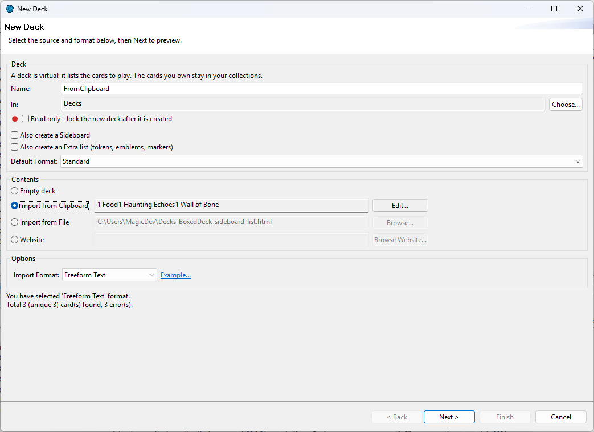
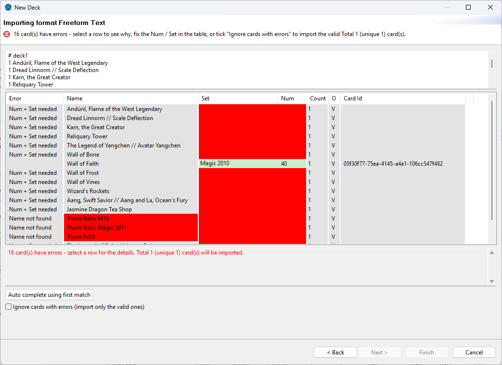
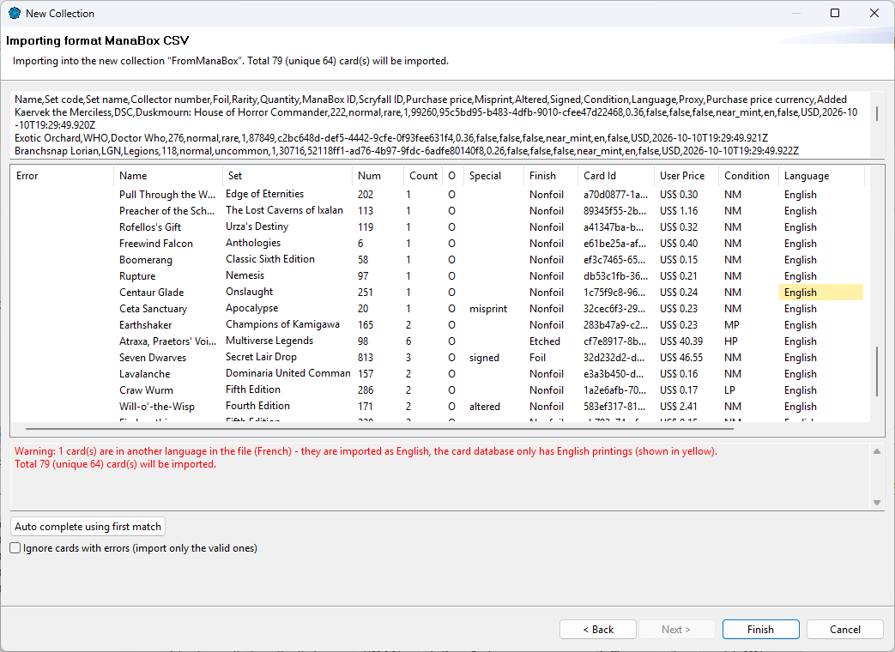

Import a card list to create a deck or collection in one go, or to add many cards to an existing one. The list can come from the clipboard, a file, a deck website, or another app's export.
| To... | Use |
|---|---|
| Create a new deck from a list | , then Import from Clipboard, Import from File or Website (see Creating a deck). |
| Create a new collection from a list | , then Import from Clipboard or Import from File (see Creating collections). |
| Add cards to an existing deck or collection | Right-click it in the Card Navigator, Import into... |
All the ways in lead to the same pages. Here, the New Deck wizard with a list on the clipboard:

ManaDesk recognizes the format on its own; you can still pick it in the list. Example... shows what that format looks like. The line below tells how many cards were found.
| Format | What it is |
|---|---|
| Freeform Text | Any deck list: 4 Lightning Bolt, 4x Lightning Bolt (M10),
Lightning Bolt, lines with a Scryfall id, # comments, and a Sideboard line before
the sideboard cards. This is what most websites, forums and apps produce. |
| ManaDesk CSV / ManaDesk CSV Semicolon | The files ManaDesk exports (see Exporting). |
| ManaBox CSV | Exports from the ManaBox app (see ManaBox). |
| Magic Assistant CSV | CSV files with a header row, from Magic Assistant and similar programs (columns such as Name, Set, Count, Language, Collector Number...). |
Click Next. The preview shows every card as ManaDesk understood it, before anything is imported.

The zone below the table also warns you when the import changes something from the file:

Click Finish to import.
See also: Importing from a website · ManaBox · Exporting